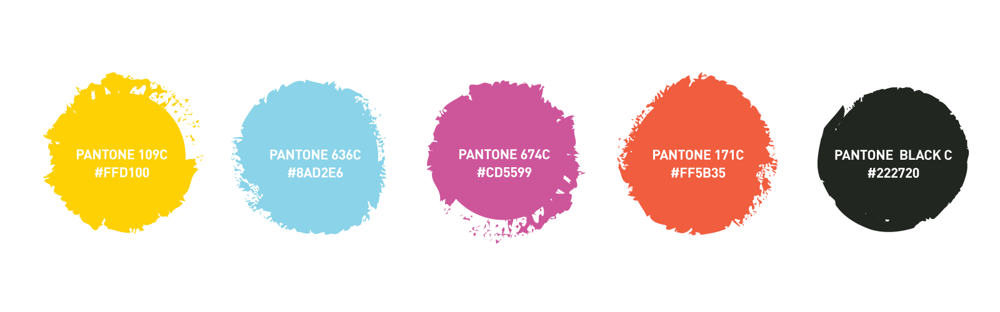
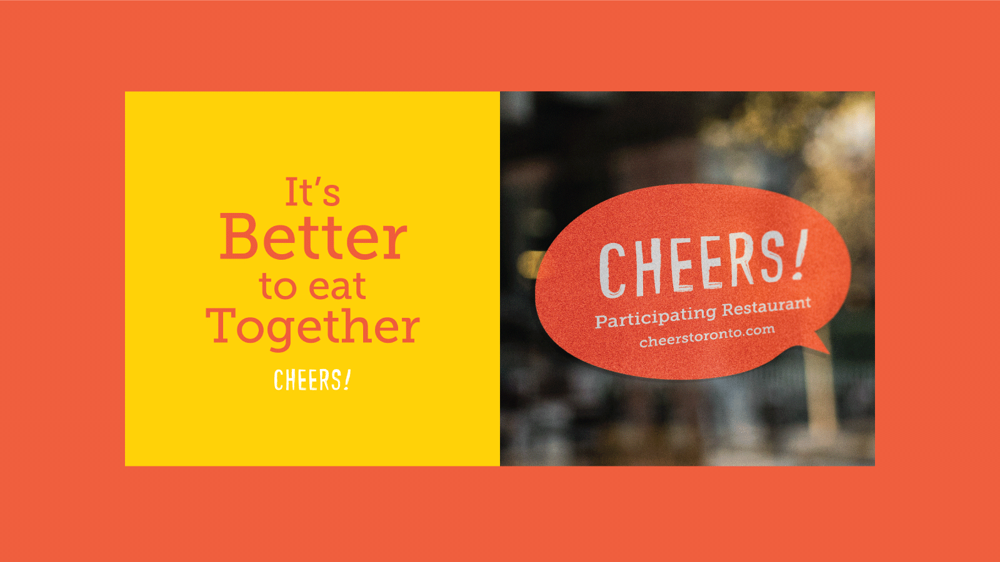
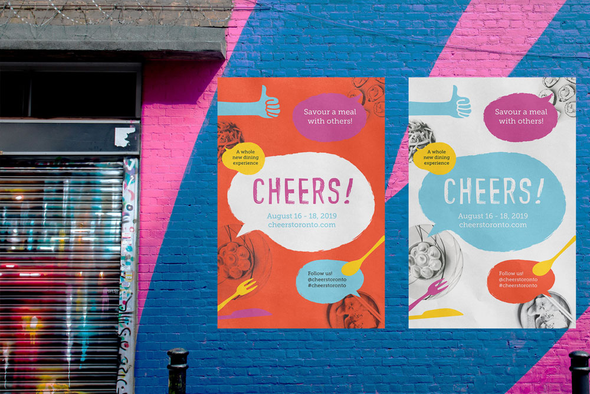
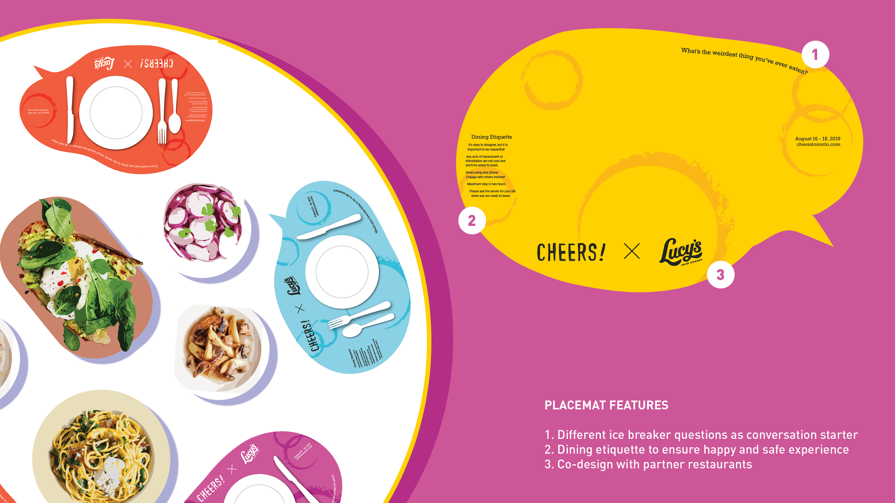
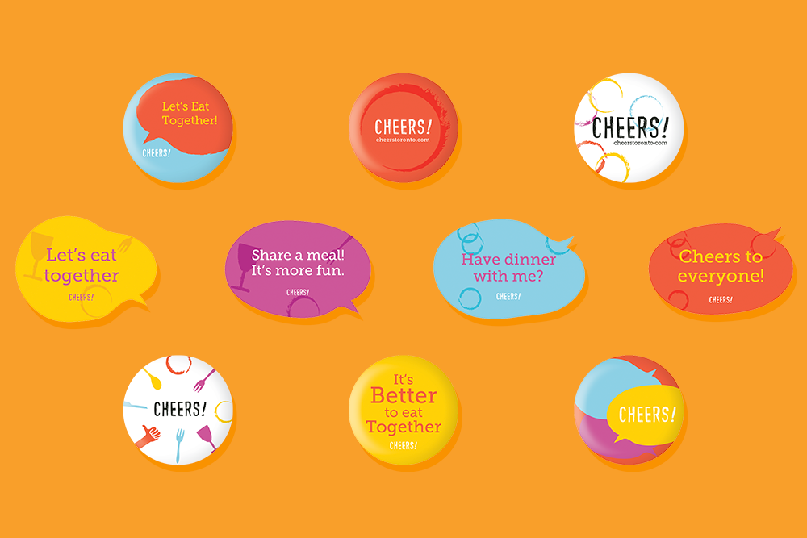
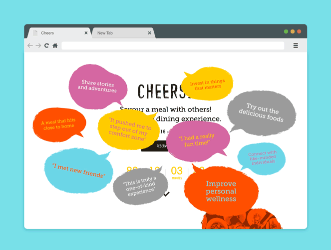

Cheers |
|
A campaign to strengthen community bonds by eating together. |
|
Communal eating is essential to one’s wellbeing. The social and emotional benefits build new relationships and nurtures existing bonds. It also promotes nutritional eating and reduces chances of obesity and other health risks. Unfortunately, eating in solitude is a rising trend in North America as attitude towards food is emphasized on nutrients as opposed to socializing. In addition, more people are choosing to live alone, making it more difficult to dine with others.
28.2% of Canadians households were one-person households in 2016.(Statistics Canada)
Communal eating is the keystone habit to improve one’s overall wellbeing, and obstacles need to be resolved in order to bring everyone back to the dinner table.
Target Audience
Based on my research, I decided to address the rising single-person households in North America. They are mostly millennials, comfortable with technology, and have no preference between eating alone or with others. They often eat alone because it is more convenient, and don’t have the reason to go out of the way to eat with friends and family.
Initially, I wanted to create an app of shared dining, however it wouldn’t be effective if no one is seeking out the app to begin with. The solution needs to be prominent, ubiquitous, and stops them in the tracks.
Solution
I decided to create a weekend event that would take place in downtown Toronto. Partnering with local restaurants, a table menu will be provided with food items to be shared amongst others. Locals can reserve their spot online and share food with others. There will be a set start time to ensure everyone is present when the meal is served. The dining process is designed to engage participants in a fun and positive manner by emphasizing socialization at the meal table.
The desired outcome is to change the participants’ perspective on social eating, that it is an opportunity to destress and develop bonds rather than another appointment on a busy schedule. Ultimately, the event will encourage participants to make an effort to eat with others on a daily basis.
Elements of surprise and the unique experience will attract millennials to attend this event and dine with others. Similarly, the branding will reflect an adventurous and energetic atmosphere.





